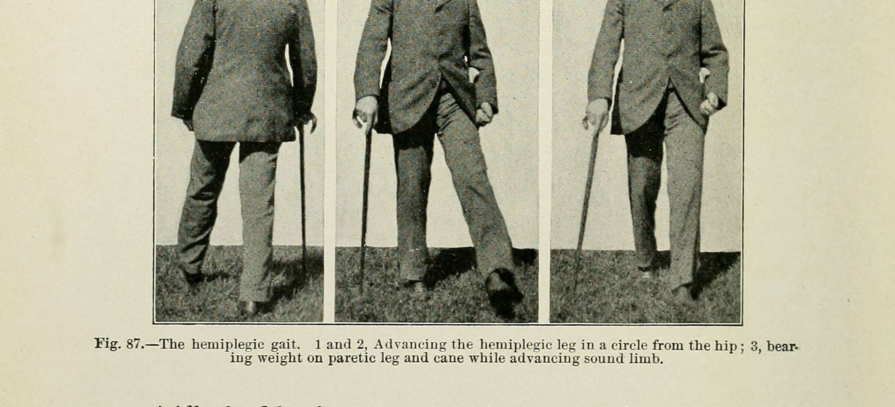

Página 6 · E4
Tônus
Tônus = grau de contração muscular basal (mesmo em repouso há um “grauzinho”). Lesão do 1º: 2º liberado estimula demais → hipertonia espástica (elástica). Postura clássica: MS em flexão, MI em extensão (AVE de cápsula interna). Característica: velocidade-dependente — quanto mais rápido se tenta alongar, mais o membro “segura”/trava.
Não confunda com Parkinson: não é problema de força; rigidez em roda denteada; não “trava mais” com velocidade da mesma forma que a espástica.
Lesão do 2º: hipotonia / flácido (“pano frouxo”, “molengue”). No exame, segurar o membro e sentir o tônus — não só olhar a força.
Atrofia
Músculo não utilizado tende a perder massa — com graus diferentes. 1º: atrofia leve — sobretudo hipotrofia de desuso (músculo ainda “hiperestimulado” de forma anômala, sem uso voluntário efetivo). 2º: atrofia grave — “perdeu a vida”; padrão “pele e osso”.
Babinski
Objeto de ponta romba esfrega a planta do calcâneo à raiz dos dedos (classicamente lateral→medial; também trajetória reta). Normal: dedos em flexão plantar — analogia do pé de macaco que “segura o galho”. Babinski presente: hálux em extensão (“olhando para cima”) — cola de lesão de 1º NMS. No 2º, o hálux frequentemente não mexe — Babinski ausente (não é o padrão de extensão do 1º).
Fasciculações
Miofasciculações: movimento visível de fibras “sozinhas” (deltoide, bíceps, pálpebra…). Isoladas, sem fraqueza, não têm significado clínico relevante (tensão, K/alimentação, esforço, fadiga ocular…). No contexto de fraqueza de 2º NMS, podem representar denervação — entram na obra do 2º, não do 1º. Sozinhas não fecham diagnóstico; no quadro completo de 2º, o nome em prova empurra fortemente para doença típica desse andar.
Síndrome piramidal
Síndrome do 1º NMS = síndrome piramidal (trajeto nas pirâmides bulbares).
| Parâmetro | 1º NMS (piramidal) | 2º NMS |
|---|---|---|
| Força | Paresia/plegia | Paresia/plegia |
| Reflexo | Exaltado | ↓ / abolido |
| Tônus | Hipertonia espástica (velocidade-dependente) | Hipotonia / flácido |
| Atrofia | Hipotrofia de desuso | Grave (“pele e osso”) |
| Babinski | Presente (hálux em extensão) | Ausente / sem resposta |
| Fasciculação | Não é o padrão | Pode acompanhar fraqueza (denervação) |

| Parâmetro | 1º NMS (piramidal) | 2º NMS |
|---|---|---|
| Força | Paresia / plegia | Paresia / plegia |
| Reflexo | Exaltado | ↓ / abolido |
| Tônus | Hipertonia espástica (velocidade-dependente) | Hipotonia / flácido |
| Atrofia | Hipotrofia de desuso | Grave (“pele e osso”) |
| Babinski | Presente (hálux ↑) | Ausente / sem resposta |
| Fasciculação | Não é o padrão | Pode acompanhar fraqueza |
MS em flexão · MI em extensão
Pano frouxo · molengue
Parkinson = roda denteada, não déficit de força
Quiz — fixação
-
Qual combinação é mais típica de 2º NMS?
Gabarito B. padrão periférico clássico.
A é 1º; C é Parkinson (não fraqueza); D é placa. misturar todos os “sinais neuro” num saco só.
-
Babinski presente (hálux em extensão) cola prioritariamente:
Gabarito B. Babinski+ = piramidal/1º.
no 2º o hálux tende a não responder; placa/músculo não “possuem” Babinski como marca. achar que qualquer sinal plantar é “periférico”.
-
Fasciculações isoladas, sem fraqueza:
Gabarito B. isoladas ≠ doença.
A inventa; C erra o andar; D é salto etiológico. pânico com “fibra tremendo”.